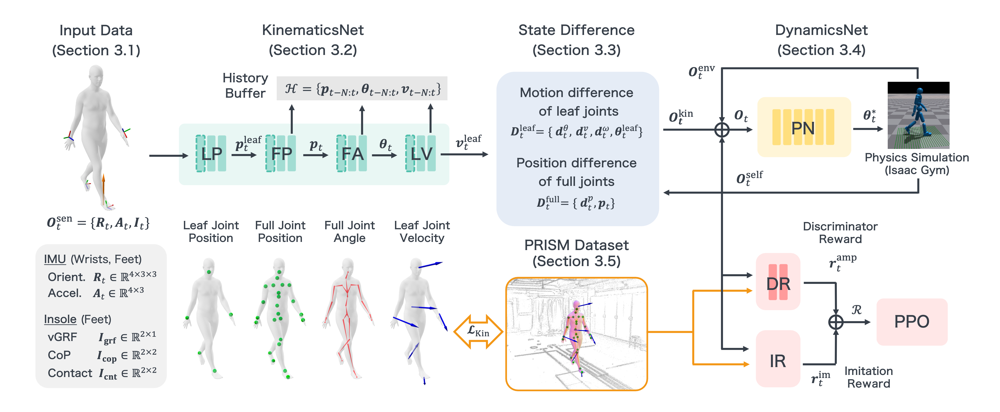

1Carnegie Mellon University 2Keio University 3Keio AI Research Center
We propose Ground Reaction Inertial Poser (GRIP), a method that reconstructs physically plausible human motion using four wearable devices. Unlike conventional IMU-only approaches, GRIP combines IMU signals with foot pressure data to capture both body dynamics and ground interactions. Furthermore, rather than relying solely on kinematic estimation, GRIP uses a digital twin of a person, in the form of a synthetic humanoid in a physics simulator, to reconstruct realistic and physically plausible motion. At its core, GRIP consists of two modules: KinematicsNet, which estimates body poses and velocities from sensor data, and DynamicsNet, which controls the humanoid in the simulator using the residual between the KinematicsNet prediction and the simulated humanoid state. To enable robust training and fair evaluation, we introduce a large-scale dataset, Pressure and Inertial Sensing for Human Motion and Interaction (PRISM), that captures diverse human motions with synchronized IMUs and insole pressure sensors. Experimental results show that GRIP outperforms existing IMU-only and IMU–pressure fusion methods across all evaluated datasets, achieving higher global pose accuracy and improved physical consistency.

Overview of the GRIP framework. Input Data consists of IMU and insole measurements. KinematicsNet estimates kinematic states, and the State Difference compares them with the simulated humanoid. DynamicsNet drives the humanoid through physics simulation-based control. The PRISM dataset provides diverse multi-modal training data.
GRIP takes four IMU signals (two wrists, two insole-embedded) and foot pressure data, including vertical ground reaction forces (GRF), center of pressure (CoP), and binary contact labels. Sensors are compact enough for everyday wear.
A progressive LSTM-based network that estimates leaf-joint positions, full-joint positions, full-body joint angles, and leaf-joint velocities from raw sensor inputs frame by frame. Outputs are stored in a history buffer for fall recovery.
An intermediate representation capturing discrepancies between the KinematicsNet estimates and the simulated humanoid state. Includes leaf-joint rotational/velocity differences and full-body root-relative joint position differences.
A physics-based MLP policy trained with PPO that drives a torque-controlled humanoid in a simulator. Observations include sensor data, State Difference, self-state, and environment height map. A fall recovery mechanism ensures stable inference.
To enable robust training and fair evaluation of GRIP, we introduce Pressure and Inertial Sensing for Human Motion and Interaction (PRISM), a new large-scale multimodal dataset capturing diverse human motions with synchronized IMUs and insole pressure sensors, optical motion capture, and physical object models. PRISM covers daily activities (walking, jogging), slow movements (stretching, squats), fast sports actions (golf, baseball, soccer), and object interactions (stepping onto or sitting on objects). The dataset consists of 1,275 ten-second sequences from six subjects (~3.5 hours total) at 100 Hz, with SMPL pose labels obtained via MoSh.
PRISM dataset provides multimodal measurements including IMUs, foot pressure, motion capture, and 3D environment models for physically consistent motion evaluation.
Qualitative comparison across the three datasets. Our method accurately reconstructs foot placement on objects (PRISM), exhibits less position drift (UnderPressure), and captures slow weight-shifting motions (PSU-TMM100).
Lower values indicate better performance for all metrics. Bold = best, underline = second best.
| Dataset | Method | MPJPE↓ [mm] |
PEL-MPJPE↓ [mm] |
PA-MPJPE↓ [mm] |
MPJRE↓ [deg] |
Acc↓ [m/s²] |
FS↓ [m/s] |
FP↓ [mm] |
vGRF↓ [N] |
|---|---|---|---|---|---|---|---|---|---|
| PRISM | PIP | 248.59 | 85.48 | 33.35 | 17.08 | 6.68 | 0.20 | 10.71 | 246.85 |
| GlobalPose | 198.30 | 43.50 | 31.29 | 12.01 | 7.72 | 0.22 | 9.72 | 299.22 | |
| MobilePoser | 267.45 | 72.76 | 55.69 | 17.99 | 6.20 | 0.19 | 9.97 | 248.54 | |
| FoRM | 199.60 | 87.34 | 63.75 | 20.23 | 9.67 | 0.36 | 15.64 | — | |
| SolePoser | — | — | 82.75 | — | 9.68 | — | — | — | |
| GRIP (Ours) | 182.44 | 63.85 | 46.47 | 13.89 | 7.30 | 0.21 | 5.77 | 258.40 | |
| Under Pressure |
PIP | 523.65 | 29.89 | 21.08 | 8.35 | 12.59 | 0.32 | 1.43 | 265.62 |
| GlobalPose | 301.12 | 21.49 | 17.41 | 7.40 | 16.65 | 0.32 | 3.31 | 287.12 | |
| MobilePoser | 626.62 | 44.28 | 33.74 | 11.73 | 12.62 | 0.35 | 1.27 | 244.78 | |
| FoRM | 553.19 | 59.29 | 32.60 | 18.50 | 17.34 | 0.57 | 21.52 | — | |
| SolePoser | — | — | 34.52 | — | 24.27 | — | — | — | |
| GRIP (Ours) | 218.09 | 37.27 | 27.16 | 7.64 | 13.22 | 0.31 | 0.00 | 278.27 | |
| PSU- TMM100 |
PIP | 182.14 | 87.56 | 61.62 | 21.12 | 1.62 | 0.09 | 5.84 | 367.87 |
| GlobalPose | 175.96 | 63.05 | 50.28 | 18.71 | 2.09 | 0.14 | 2.95 | 340.11 | |
| MobilePoser | 210.66 | 112.35 | 85.46 | 28.10 | 2.37 | 0.10 | 5.28 | 358.19 | |
| FoRM | 126.60 | 98.02 | 82.45 | 25.19 | 1.60 | 0.13 | 4.51 | — | |
| SolePoser | — | — | 97.11 | — | 1.36 | — | — | — | |
| GRIP (Ours) | 118.60 | 70.32 | 55.72 | 16.72 | 4.31 | 0.11 | 0.73 | 316.06 |
GRIP achieves accurate full-body motion estimation using only four IMUs worn on the wrists and feet, combined with insole pressure data—a setup practical for everyday use.
KinematicsNet + DynamicsNet enables observer–controller decomposition: kinematic estimation feeds a physics-based humanoid controller, ensuring physically plausible motion without auxiliary forces.
A new public multimodal dataset with 1,275 sequences (~3.5 hours) covering diverse motions, synchronized IMU/pressure, optical MoCap, and physical object models for comprehensive evaluation.
@inproceedings{hori2026grip,
title = {Ground Reaction Inertial Poser: Physics-based Human Motion Capture
from Sparse IMUs and Insole Pressure Sensors},
author = {Hori, Ryosuke and Song, Jyun-Ting and Luo, Zhengyi and Cao, Jinkun
and Shin, Soyong and Saito, Hideo and Kitani, Kris},
booktitle = {Proceedings of the IEEE/CVF Conference on
Computer Vision and Pattern Recognition (CVPR)},
year = {2026}
}